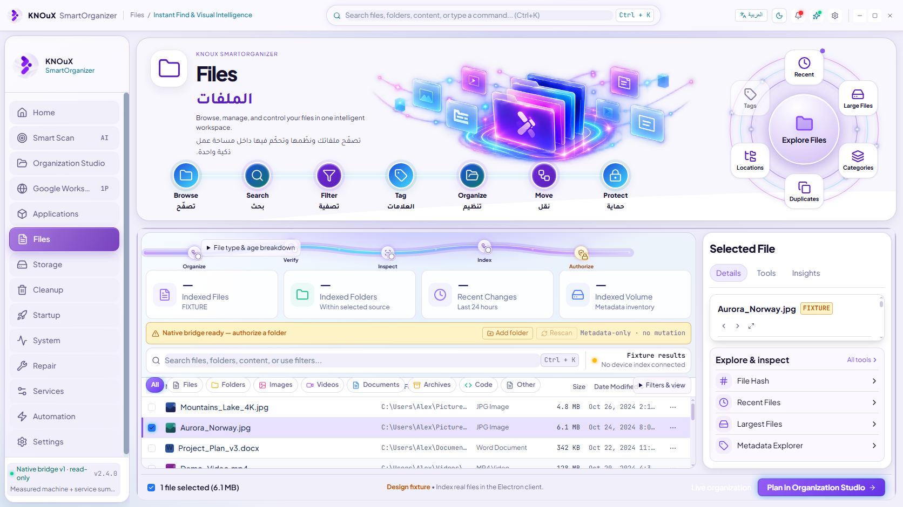

Files · actual Electron evidence Before: preserved Living Glass baseline (included design fixture data). Current: actual authorized disposable native data. Headers are preserved. No pixel-perfect or release claim.
Before · 1672×941 
Current capture browser-unavailable file-downloads-inventory file-empty-folders file-hash file-largest file-metadata file-organize-apply file-organize-preview file-organize-undo file-provenance file-recents file-search file-type-map idle-day-en-1672x941 last-row-day-ar-1366x768 last-row-day-en-1672x941 last-row-day-en-1920x1080 last-row-night-en-1672x941 measured-day-ar-1366x768 measured-day-en-1672x941 measured-day-en-1920x1080 measured-night-en-1672x941 native-cancelled-partial native-empty-folders native-grid native-missing-source-failed native-sha256 query-empty source-b-only Native runtime proof · Scope and limitations